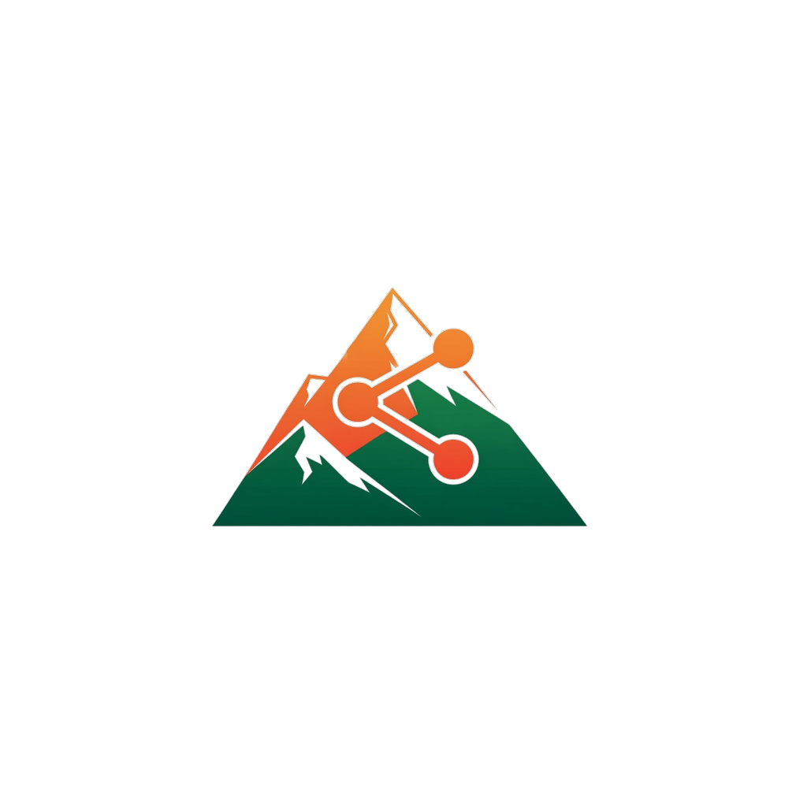

TrailShare
Il tuo compagno di sentiero
Scopri tutte le funzioni →
iOS · Android · Web · 14 attività sportive

Filtro mediano, smoothing, isteresi anti-rumore per stats accurate
Trekking, trail running, MTB, sci, racchette da neve e molto altro
Distanza, dislivello, velocità, HR, calorie, split/km in tempo reale
Se l'app si chiude, al riavvio recuperi la traccia senza perdere un metro
Modalità a basso consumo: 8h con solo 25% di batteria
Riconosce il tipo di sport in base a velocità e stile di movimento
Scarica zone intere prima di partire. Ideale per rifugi senza copertura
La mappa ruota seguendo la tua direzione di marcia con sensor fusion
Indicazioni vocali IT/EN: POI, off-trail, re-routing, ultimo km, arrivo
Se ti allontani oltre 100m, ricalcola il percorso per riportarti in pista
Fontane, rifugi, panorami, pericoli. Notifica vocale all'avvicinamento
Disegna o snap-to-trail. Stats pre-partenza con tempo stimato
I tuoi contatti vedono la tua posizione in tempo reale ogni 30 secondi via link sicuro
Se non ti muovi, countdown con anti-tap accidentale. Se non rispondi, alert automatico
Sempre accessibile in un tap durante la registrazione. Chiama il 112 senza passaggi
Banner con stato sistema: verde OK, giallo degradato, rosso critico. Sempre visibile
Senza rete dati, gli alert partono via SMS nativo. Il soccorso arriva comunque
Posizioni salvate localmente in SQLite. Quando la rete torna, inviate in batch
Condividi tracce con foto HD, descrizione e statistiche nel feed community
Discussioni in tempo reale sotto ogni traccia. Moderazione dal proprietario
Like rapidi + stelle + testo libero. Segnala condizioni trail aggiornate
Segui altri escursionisti, ricevi le loro nuove tracce nel feed personale
Avatar, bio, livello XP, badge, distanza cumulata e tracce pubbliche
Salva i percorsi che vuoi fare. Sincronizzata cloud su tutti i dispositivi
Aggrega più tracce in un viaggio. Dai un titolo e aggiungi tappe in ordine
Distanza totale, dislivello, giorni e durata di tutto il Tour
Tutte le tappe sovrapposte su un'unica mappa per vedere il viaggio intero
Tienilo per te o condividilo con la community per ispirare altri
Link dedicato trailshare.app/tour/{id} con preview Open Graph ricca
Visualizza ogni tappa con statistiche individuali e profilo altimetrico
Ogni volta che percorri un segmento conosciuto, viene cronometrato in automatico
King e Queen of the Mountain: conquista il primo posto nei segmenti più iconici
Il tuo miglior tempo viene salvato e confrontato a ogni passaggio
Classifica segmento con avatar, tempo, data e velocità media
Definisci i tuoi segmenti dalla mappa o usa quelli della community
Dialog con nuovo PB o nuovo record appena salvi la traccia
Da Principiante a Immortale. Guadagna XP per km, dislivello e tracce completate
Milestone, distanza, dislivello, social, streak. Da Primi Passi a Inarrestabile
Ogni lunedì una sfida unica basata sui tuoi ultimi 8 settimane di attività
Top 50 della tua regione per XP o distanza mensile. 20 regioni italiane
"Il mio mese": stats, record, confronto col mese prima, badge sbloccati
Giorni consecutivi con traccia. Contribuisce ai badge Costante → Inarrestabile
Distanza totale, dislivello, ore, tracce, record, grafico a torta per attività
Touch sulla curva → punto esatto sulla mappa. Colorato per velocità o quota
Grafico battito cardiaco: riposo, leggera, aerobica, soglia, massima
Filtra per settimana, mese, anno. Vedi tendenze e progressi nel tempo
Hero stats, confronto con mese prima, record, breakdown per attività
Traccia più lunga, dislivello maggiore, durata massima — sempre aggiornati
GPX universale, TCX per Garmin, FIT nativo dispositivi, KML per Google Earth
Apple Health / Google Health Connect: import HR, passi, calorie; export workout
Link pubblici con preview ricca su WhatsApp, Facebook, email. Open Graph completo
Light, Dark, System. Ogni pixel si adatta. Tipografia Outfit + DM Sans
Localizzazione completa con plurali ICU. Pensata per utenti italiani e stranieri
Crea o entra in gruppi tematici (CAI, amici). Feed dedicato, eventi condivisi